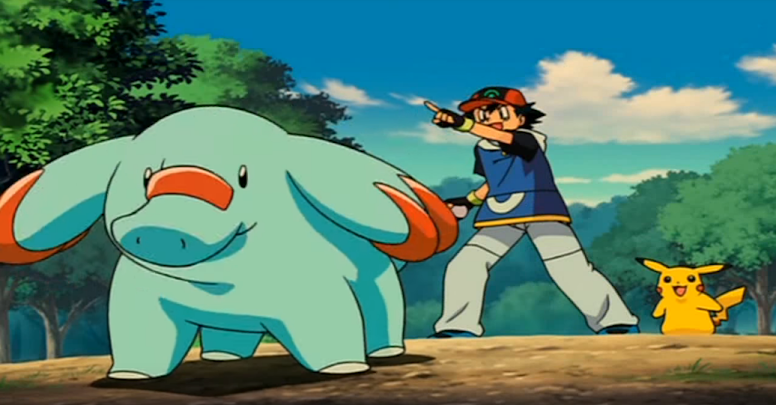

Pokémon o Filme: Lucario e o Mistério de Mew
🟡 Nome Japonês: Pocket Monsters Advanced Generation the Movie - Mew and the Wave Hero: Lucario
🟡 Nome Americano: Pokémon: Lucario and the Mystery of Mew
🟡 Nome Brasileiro: Lucario e o Mistério de Mew
Data de lançamento:
🎞 Japão: 16 de julho de 2005
🎞 EUA: 19 de setembro de 2006
🎞 Brasil: 23 de Fevereiro de 2008
História
A introdução começa com um narrador falando sobre o fantástico mundo dos Pokémon e de seus treinadores, que treinam bastante para participar de batalhas e sonham em se tornar Mestre Pokémon.

Há muito tempo, em um reino, um Ho-Oh aparece voando. Um Lucario sai
correndo pulando de rocha em rocha, indo em direção à terra de
Rotha. Ele fecha os olhos e, através de uma energia, ele consegue
localizar um exército identificado pela roupa e acessórios
vermelhos, composto por vários Pokémon e humanos. Em outra direção,
ele observa a mesma coisa, porém o exército possui roupas e
acessórios verdes. Ele olha para o céu e vê Ho-oh passando por cima.
Três Houndoom do exército vermelho aparecem e começam a perseguir
Lucario, que foge. Ele toca em um cristal e grita por seu Mestre,
chamado Aaron. Ele está em um castelo, do lado da rainha Lynn. Ele
toca em um cristal que se encontra ao lado dele no castelo e ouve o
que Lucario diz.
Lucario diz que a guerra entre os exércitos seria travada na região
do reino e isso o destruiria. A rainha Lynn diz que não vai fugir e
sim morrer junto com o reino, mas Aaron fica indeciso e pula em seu
Pidgeot, vai até Lucario, e diz que abandonou a rainha e o reino e
que nunca mais irá voltar. Lucario não acredita no que ouviu, e
nesse mesmo instante Aaron começa a correr e Lucario o segue, e
então Aaron lança seu Bastão, prende Lucario nele e foge novamente.
Então, a rainha aparece dizendo que a Árvore da Origem está
chorando. Os exércitos começam a se mover, o Pidgeot de Aaron acha
seu Bastão e leva até a rainha e então um raio verde sai da Árvore
da Origem e faz com que todos se acalmem, transformando tudo de mau
em bom e assim dizimando a Guerra e salvando o Reino. Aparecem
imagens de um livro e uma mulher contando a história para sua filha
em que a rainha entende que Aaron foi atrás de Mew na Árvore da
Origem para ele acabar com a Guerra e salvar o Reino, se tornando
uma "Lenda". Começa a música de introdução e o nome do filme
aparece.
Depois, o narrador volta a falar de Ash e sua turma, já que eles
estão indo para o Palácio Cameron, que servirá de local para o
festival que homenageará o Guardião Sir Aaron. O evento principal
será uma competição Pokémon, portanto os treinadores estão vindo de
todas as partes para competir. Ao vencedor será dado o título de
"Guardião da Aura" do ano. Faz parte do festival todos usarem trajes
tradicionais, então Brock vê no seu guia que eles devem ser
retirados no Palácio.
Ash e a turma vão até o palácio e pegam suas fantasias. Jessie,
James e Meowth também pegam fantasias para se infiltrar no festival
e roubar alguns Pokémon. Depois disso, aparece a Lady Alynn,
descendente da rainha Lynn, declarando o início das batalhas. A
música da temporada "Geração Batalha Avançada" começa a tocar e os
créditos iniciais e as batalhas começam. Depois, há a final da
última batalha de Ash contra um Cavaleiro e seu Weavile. Ash ganha a
batalha com seu Pikachu, que foi o único Pokémon usado por ele. O
cavaleiro vai cumprimentar Ash e, quando tira o capacete, todos
descobrem que era uma mulher. Nesse meio tempo, Mew entra no Palácio
e se disfarça de Aipom, ficando amigo de Pikachu. Ash, como ganhador
do torneio, recebe o título de "Guardião da Aura" do ano. Todos vão
para o baile e Ash recebe o Bastão de Sir Aaron.
Quando Ash recebe o Bastão de Sir Aaron, ele ouve uma voz, que é a
voz do Lucario preso. O baile começa e Ash e a turma soltam seus
Pokémon para festejar, que vão para outro andar junto a Mew,
enquanto Meowth começa a segui-los. Então, aparece a adversária
final de Ash, Kidd, subindo no telhado, falando com uma pessoa por
celular e se entende que ela está no festival para poder pegar Mew.
Kidd solta dois Weavile e eles começam a perseguir Mew por um
rastreador, mas Mew escapa levando Meowth e Pikachu que estava
ferido até a Árvore da Origem, na forma de Pidgeot.
Max aparece no quarto em que os Pokémon estavam e se assusta.
Enquanto isso, no palácio, Ash continua ouvindo Lucario no Bastão e,
quando tem que fazer um gesto para liberar os Fogos de Artifícios,
Lucario escapa do Bastão e começa a brigar com ele, achando que ele
era Sir Aaron. Lucario foge do baile e vai até um dos quartos do
palácio, lembrando-se de seu "Mestre". Lady Alynn, Ash e todo o
grupo vão atrás de Lucario, explicando o que acontece e
contradizendo a lenda. Max os encontra e diz que viu Mew e que ele
desapareceu com Meowth e Pikachu, mas ninguém acredita, até que Kidd
entra na sala e confirma o que foi dito, informando que Mew se
transformou em Pidgeot e os levou embora.
Lady Alynn explica onde Mew levou Pikachu e Meowth, mas como Mew
pode se transformar em qualquer Pokémon, seria difícil
identificá-lo. Então Alynn lembra que Lucario pode ver auras e pede
para ele ajudar a identificar Mew. Kidd entra na varanda em que
todos estavam com sua "roupa de trabalho", e Brock a reconhece como
uma quebradora de recordes. Ele explica e diz muitos elogios sobre
ela. Kidd leva Ash, Brock, May e Max em seu jipe, seguidos por
Lucario, pois a neblina estava muito forte. Ash e os outros ficam
confusos com a aura de Lucario e Kidd os explica. Enquanto passam
por um buraco, o porta-malas abre e Jessie e James estão dentro.
Enquanto isso, aparece Mew, Meowth e Pikachu no lugar em que Mew
esconde os brinquedos que pega do Palácio, mas Pikachu ainda está
desacordado. No mesmo momento, Ash e a turma fazem uma pausa e Brock
faz a comida, mas de repente um Bonsly aparece e começa a comer
tudo. Brock começa a brigar com Bonsly até fazê-lo chorar, recebendo
em seguida algumas frutas de Lucario.
Depois, Pikachu acorda e começa a brincar com Mew. Meowth também
acorda e se apoia num tronco que é uma espécie de portal e
desaparece. Pikachu e Mew vão atrás dele e então caem em um buraco
com bolhas verdes em que eles se apoiam para subir até chegar em um
outro portal na parte superior. Lá, eles se deparam com uma linda
vista. A turma de Ash volta à estrada e Bonsly se infiltra no jipe
na parte superior. De repente, Lucario para de correr e todos se
deparam com vários gêiser. Então May se depara com uma piscina
termal e todos vão relaxar.
Bonsly é descoberto e se junta ao resto. May avista uma linda flor e
Ash escala o morro para pegá-la. Depois, May replanta a flor e,
quando Ash toca nela, ela desabrocha e todos veem o momento em que
Ash pega a flor e sofre uma pequena queda. Kidd explica que é uma
Flor do Tempo, que a lenda diz que Sir Aaron usa para ver o passado.
Mais uma vez, é retomada a teoria de que Ash tem a mesma aura de
Aaron, ou seja, uma suposta reencarnação. Ash começa a contar sobre
como se dava mal com Pikachu e de como virou super amigo dele. Nesse
momento, Lucario começa e se recordar de sua amizade e exercícios
com Sir Aaron e acaba "ofendendo" os humanos. Ash fala alguns
desaforos e Lucario faz o mesmo, e os dois começam a brigar. Depois
da briga, os dois vão para lados diferentes, May vai consolar Ash e
Max vai consolar Lucario.
Depois disso, surge um tocador de música de dormir e Mew, Pikachu e
Meowth, em volta dele, se preparando para dormir. Contudo, Pikachu
diz que está com saudades de Ash e que quer voltar para ele (na
linguagem Pokémon). Ash e seus amigos estão dormindo no jipe de
Kidd, e então Ash acorda e sai do carro para refletir sobre Pikachu.
Lucario observa tudo.
Depois, Ash e os outros voltam à estrada na manhã seguinte, quase
chegando ao seu destino: a Árvore da Origem. De repente, Lucario
pára e diz que eles estavam no local em que ele havia sido preso no
bastão. Lucario se ajoelha e começa a se lamentar e perguntar o
porquê do ocorrido. No lugar em que se ajoelhou, estava uma Flor do
Tempo, a qual permite observar o ocorrido, e Lucario se
desestabiliza. Ash vai até Lucario e pede desculpas pelas palavras
da noite anterior, e Lucario o faz prometer que ele nunca
abandonaria Pikachu, como Aaron fez com ele.
De repente, um Regirock começa a atacá-los com Hiper Raio, mas
Lucario repele o ataque com Esfera de Aura e todos fogem, seguindo
caminho para a Árvore da Origem, mas sem o jipe que foi arremessado
pelo lendário. Lucario os guia por um túnel e todos saem em uma
floresta, que na verdade é a Árvore da Origem. Lá estão todos os
Pokémon Pré-Históricos que haviam sido descobertos até a 3ª Geração,
sendo um verdadeiro Parque Ambiental, e o que vai ajudar Kidd a
entrar para o Livro dos Recordes de novo.
Eles seguem a trilha em busca de Pikachu, já avistado no topo da
montanha. Logo atrás, aparecem Jessie e James. Regirock fica onde os
dois estavam. Na caverna, os robôs de Kidd que estavam coletando
dados do lugar são atacados por Registeel. Ash e Lucario correm e
conseguem se comunicar de longe com Pikachu. Ash começa a escalar a
floresta para chegar em Pikachu e, então, um Regice aparece e ataca
Ash e Lucario, novamente fazendo o Pokémon repelir os ataques com
Esfera de Aura. Ash tenta explicar o porquê de estarem na Árvore da
Origem, mas não adianta nada. Todos fogem de Regice, entram num
túnel novamente e são trancados por um Raio de Gelo.
Quando chegam no meio da caverna, encontram Jessie e James fugindo
de Regirock e Registeel, que começam a atacar todos. Lucario
continua repelindo os ataques e todos conseguem fugir novamente.
Eles atravessam uma ponte de rocha e Lucario usa uma Esfera de Aura
para quebrar a ponte, impedindo a passagem de Regirock e Registeel.
Depois de se salvarem do Trio Regis, são atacados por coisas
gelatinosas em formas de Pokémon, que absorvem Jessie e James.
Regirock e Registeel os alcançam e Lucario os ataca para poderem
fugir. Depois, são atacados pelas coisas gelatinosas e Kidd descobre
que elas são células brancas de sangue da Árvore da Origem. Elas
atacam Lucario, mas não consideram Pokémon inimigos, então nada
acontece. Ash e Lucario resolvem distrair Regirock e Registeel
enquanto os outros procuram uma saída.
Nesse mesmo momento, Mew, Pikachu e Meowth correm atrás deles e
acabam encontrando as coisas gelatinosas sendo mandadas na direção
de Ash e seus amigos. As células vão atrás de May, Brock, Max e
Kidd. Brock e May liberam seus Pokémon no momento em que são
absorvidos pelas células. Pikachu chega até o centro de ligação das
saídas e chama por Ash, e seu eco ecoa pela caverna. Ash começa a
segui-la. Os dois chegam no centro, que é formado por pontes de
gelo, mas de lados opostos, e correm para se encontrar. O vento está
muito forte e eles dão algumas escorregadas. Pikachu escorrega e Ash
o pega, e os dois caem. Kidd aparece com seu equipamento e salva os
dois. No meio da confusão, o boné de Ash acaba voando e Mew entrega
de volta para ele. Nesse mesmo momento, Regice aparece e começa a
atacá-los.
Ash pergunta sobre os outros para Kidd e ela faz um olhar de
tristeza para Ash. Mais células aparecem para atacá-los e Kidd diz
que eles pegaram todos os amigos de Ash. Eles saem correndo e veem
uma abertura com uma luz e pensam que é da luz do sol, mas quando
saem, descobrem que na verdade estavam em um outro túnel da Árvore
da Origem. Quando tentam sair, Registeel segura Lucario e as células
absorvem Ash e Kidd. Os Pokémon de Ash começam a chorar e Mew fica
triste por Pikachu, e usa o mesmo ataque usado na guerra para acabar
com ela.
Depois disso, todos os absorvidos são devolvidos nos mesmos lugares
e o Trio Regis desiste da intensa caçada. Kidd entende que Mew vive
lá porque a Árvore da Origem e Mew dependem um do outro. De repente,
Mew cai no chão e a caverna começa a se desfazer. Mew os leva até o
coração da Árvore da Origem e então Lucario avista as luvas de Sir
Aaron. Ash acha uma Flor do Tempo, que mostra todo o ocorrido. Sir
Aaron, depois de trancar Lucario no bastão, foi até a Árvore da
Origem e deu sua Aura para que Mew restaurasse a Árvore depois de
usar o ataque, desse modo, sacrificando sua vida.
Mew explica a Lucario que há uma maneira de salvar a Árvore usando o
poder da Aura, então Lucario faz o mesmo ato de seu mestre e tenta
se sacrificar para poder salvar a Árvore. Lucario, no entanto, não
consegue devido ao seu poder estar enfraquecido, então Ash resolve
ajudá-lo. A ajuda funciona e Lucario acaba empurrando Ash,
sacrificando somente sua vida. A Árvore da Origem volta ao normal.
Meowth encontra os Rockets. May, Brock e Max se salvam, indo para
fora da caverna. Kidd resolve manter os segredos da Árvore da Origem
em sigilo, para que não atraísse a atenção de turistas.
Nesse momento, Lucario cai no chão e começa a sumir, então a Flor do
Tempo é ativada novamente e mostra uma fala de Sir Aaron em que ele
pede desculpas a Lucario e explica o porquê de tê-lo trancado.
Depois disso, Lucario começa a desaparecer e diz a Ash que Aaron
está a sua espera e então tudo volta ao normal. Ash e seus amigos se
encontram e ele explica sobre o ocorrido. Então, a tela começa a se
distanciar mostrando toda a paisagem da floresta e começam os
créditos finais.
Curiosidades
🟡 Este filme apresenta o conceito de aura para a franquia.
🟡 Este é o segundo filme em que um personagem morre e não é ressuscitado. O primeiro foi Pokémon Heróis: Latios & Latias, no qual Latios se sacrificou para salvar Alto Mare de um grande maremoto. Desta vez, dois personagens morreram: Lucario e Sir Aaron. No entanto, eles são vistos durante os créditos finais, presumivelmente na vida após a morte.
🟡 Esta é a primeira vez em que, desde o quinto filme, a música do tema correspondente é tocada durante os créditos de abertura (desta vez, é o tema da "Advanced Battle"); no entanto, ele não recebe nenhum remix.
🟡 O castelo é baseado em Neuschwanstein, o castelo em Allgäu, Baviera, Alemanha.
🟡 Neste filme, Regice foi pronunciado como "Rej-i-ice". No entanto, na Batalha da Fronteira, foi pronunciado como "Rej-ice".
🟡 Da mesma forma, Bonsly é pronunciado "Bonslee", enquanto é pronunciado como Bonsly quando Brock pega um.
🟡 Durante a cena em que Ash se lembra de uma cena de "Pokémon - Eu escolho você!", uma versão instrumental da abertura original pode ser ouvida como música de fundo.
🟡 Os dois exércitos de Pokémon, Vermelho e Verde, se referem às duas versões originais de Pokémon, Vermelho e Verde.
🟡 O Munchlax da May é o único Pokémon dos personagens principais além do Pikachu a aparecer na capa. Este é também o segundo filme em que Munchlax aparece na capa.
🟡 Este é o primeiro filme Pokémon que não tem um Pokémon Lendário como o Pokémon principal.
🟡 Quando Mew se transforma em Ho-Oh, a voz de Pidgeot é usada.
🟡 A caixa de música Lapras na Árvore da Origem toca a mesma música de Jigglypuff.
🟡 No epílogo, Kidd parece estar explorando Forina, um local apresentado em Jirachi: o Realizador de Desejos.
🟡 Dois dos personagens principais do filme, Mordomo e Diane, fazem uma aparição no cenário, parados atrás de Kidd.
🟡 O antigo design de Jynx aparece brevemente quando a árvore dos Pokémon é vista no início.
🟡 Este foi o último filme Pokémon a ser apelidado pela 4Kids Entertainment.